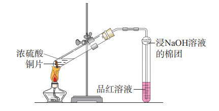

高中化学新课标必做实验
掌握核心实验操作做法、原理与注意事项

配制一定物质的量浓度的溶液
操作工具：容量瓶、烧杯、玻璃棒、托盘天平/量筒、胶头滴管、药匙
操作做法：
- 计算：根据浓度和体积计算所需溶质的质量（固体）或体积（液体）
- 称量/量取：用托盘天平称取固体溶质，或用量筒量取液体溶质
- 溶解/稀释：将溶质倒入烧杯，加适量蒸馏水搅拌溶解（浓硫酸需酸入水稀释）
- 冷却：将溶液冷却至室温（容量瓶不能加热）
- 转移：用玻璃棒引流，将溶液转移至容量瓶中
- 洗涤：洗涤烧杯和玻璃棒2-3次，洗涤液全部转移至容量瓶
- 定容：加蒸馏水至刻度线下方1-2cm处，改用胶头滴管滴加至凹液面与刻度线相切
- 摇匀：盖紧瓶塞，上下颠倒摇匀溶液
注意事项：
- 容量瓶使用前需检漏，不能用于溶解、稀释或长期存放溶液
- 转移溶液时玻璃棒末端需靠在容量瓶刻度线以下
- 定容时视线与凹液面最低处相平，俯视偏大、仰视偏小

铁及其化合物的性质
操作工具：试管、胶头滴管、烧杯、氯水、KSCN溶液、NaOH溶液、FeCl₂溶液、FeCl₃溶液、铁粉
操作做法：
- Fe³⁺的检验：向FeCl₃溶液中滴加KSCN溶液，观察溶液变为血红色
- Fe²⁺的检验：先向FeCl₂溶液中滴加KSCN溶液（无现象），再加氯水，溶液变为血红色
- Fe²⁺与Fe³⁺的转化：
- Fe³⁺→Fe²⁺：向FeCl₃溶液中加入过量铁粉，溶液由黄色变为浅绿色，加KSCN溶液无现象
- Fe²⁺→Fe³⁺：向FeCl₂溶液中滴加氯水，溶液由浅绿色变为黄色，加KSCN溶液显血红色
- Fe(OH)₂的制备：用长胶头滴管将NaOH溶液伸入FeSO₄溶液液面下滴加，观察白色沉淀生成（防止被氧化）
注意事项：
- 制备Fe(OH)₂时需排除装置内空气，可在FeSO₄溶液上加一层苯/煤油
- Fe²⁺溶液易被氧化，需现配现用，可加入少量铁粉和稀硫酸防止氧化和水解
- 氯水具有强氧化性，使用时需注意防护，剩余氯水需用NaOH溶液处理

不同价态含硫物质的转化
操作工具：试管、胶头滴管、酒精灯、导管、硫粉、Na₂S溶液、Na₂SO₃溶液、H₂SO₄（稀/浓）、氯水、品红溶液
操作做法：
- S²⁻→S：向Na₂S溶液中滴加稀H₂SO₄，产生臭鸡蛋气味气体，通入氯水生成淡黄色沉淀
- SO₃²⁻→SO₄²⁻：向Na₂SO₃溶液中滴加氯水，再加BaCl₂溶液，生成白色沉淀（不溶于盐酸）
- SO₂（+4价）的氧化性：将SO₂通入Na₂S溶液，溶液变浑浊（生成S单质）
- SO₂（+4价）的还原性：将SO₂通入氯水，氯水褪色，再加BaCl₂生成白色沉淀
- S（0价）→SO₂（+4价）：硫粉在空气中点燃，产生淡蓝色火焰，生成有刺激性气味气体
注意事项：
- SO₂有毒，实验需在通风橱中进行，尾气用NaOH溶液吸收
- 浓H₂SO₄具有强腐蚀性，使用时避免接触皮肤
- Na₂S溶液有剧毒，实验后需妥善处理废液

用化学沉淀法去除粗盐中的杂质离子
操作工具：烧杯、玻璃棒、漏斗、滤纸、蒸发皿、酒精灯、粗盐、蒸馏水、BaCl₂溶液、NaOH溶液、Na₂CO₃溶液、盐酸
操作做法：
- 溶解：将粗盐加入烧杯，加蒸馏水搅拌溶解，过滤除去不溶性杂质
- 除SO₄²⁻：向滤液中滴加过量BaCl₂溶液，至不再产生白色沉淀（BaSO₄）
- 除Ca²⁺、Mg²⁺、Ba²⁺：加入过量NaOH溶液（除Mg²⁺）和Na₂CO₃溶液（除Ca²⁺、Ba²⁺），过滤
- 调pH：向滤液中滴加盐酸至溶液呈中性（除去过量OH⁻、CO₃²⁻）
- 蒸发结晶：将溶液转移至蒸发皿，加热蒸发，出现大量固体时停止加热，余热蒸干
注意事项：
- 除杂试剂添加顺序：BaCl₂必须在Na₂CO₃之前（除去过量Ba²⁺）
- 每次加试剂后需搅拌，保证反应完全
- 蒸发时不断搅拌，防止局部过热液体飞溅

同周期、同主族元素性质的递变
操作工具：试管、胶头滴管、镊子、烧杯、Na、Mg、Al片、Cl₂水、Br₂水、I₂水、NaCl溶液、NaBr溶液、KI溶液、酚酞、稀盐酸
操作做法：
- 同周期（Na、Mg、Al）金属性递变：
- Na与水反应：钠块投入滴有酚酞的水中，剧烈反应，溶液变红
- Mg与水反应：镁条与冷水缓慢反应，加热后反应加快，溶液变红
- Al与盐酸反应：铝片与稀盐酸反应产生气泡，速率慢于Mg
- 同主族（Cl、Br、I）非金属性递变：
- Cl₂→Br₂：氯水滴入NaBr溶液，溶液由无色变为橙黄色
- Br₂→I₂：溴水滴入KI溶液，溶液由橙黄色变为棕褐色，加淀粉变蓝
注意事项：
- Na需保存在煤油中，取用后立即放回，反应时需用滤纸吸干煤油
- Cl₂水、Br₂水具有强氧化性和腐蚀性，避免接触皮肤
- 金属与酸/水反应需在通风处进行，防止氢气聚集

化学反应速率的影响因素
操作工具：试管、量筒、秒表、烧杯、盐酸（不同浓度）、Na₂S₂O₃溶液、MnO₂、H₂O₂溶液、FeCl₃溶液
操作做法：
- 浓度影响：向两支试管中分别加入等体积0.1mol/L、0.5mol/L盐酸，再加入等质量锌粒，观察产生气泡速率（浓度大速率快）
- 温度影响：向两支试管中加入等体积Na₂S₂O₃和H₂SO₄溶液，一支水浴加热，观察浑浊出现时间（温度高速率快）
- 催化剂影响：向两支H₂O₂溶液中，一支加MnO₂粉末，一支加FeCl₃溶液，观察产生气泡速率（催化剂加快速率）
- 接触面积影响：等质量的锌粒和锌粉分别与等浓度盐酸反应，锌粉反应更快
注意事项：
- 对比实验需控制单一变量（如浓度、温度、催化剂）
- H₂O₂分解产生的O₂需检验时，用带火星木条，注意安全
- 实验中及时记录反应时间，保证数据准确性

化学能转化成电能（原电池）
操作工具：烧杯、导线、电流表、锌片、铜片、稀硫酸、导线、盐桥（KCl琼脂）
操作做法：
- 简易原电池：将锌片和铜片平行插入稀硫酸，用导线连接电流表，观察电流表指针偏转（Zn为负极，Cu为正极）
- 盐桥原电池：
- 负极池：ZnSO₄溶液+Zn片；正极池：CuSO₄溶液+Cu片
- 盐桥连接两池，导线连接Zn片、Cu片和电流表，观察指针偏转，Cu片表面析出红色Cu
- 现象分析：负极Zn溶解（Zn-2e⁻=Zn²⁺），正极产生气泡（2H⁺+2e⁻=H₂）或析出Cu
注意事项：
- 电极需打磨除去氧化膜，保证接触良好
- 盐桥需提前制备（KCl饱和溶液+琼脂加热凝固）
- 实验后及时清洗电极，防止腐蚀

搭建球棍模型认识有机物分子结构
操作工具：球棍模型套装（C、H、O、N等原子球，单键/双键/三键连接杆）、白纸、铅笔
操作做法：
- 甲烷（CH₄）：中心C原子连接4个H原子，搭建正四面体结构（键角109°28′）
- 乙烯（C₂H₄）：两个C原子用双键连接，每个C连接2个H原子，平面结构（键角120°）
- 乙炔（C₂H₂）：两个C原子用三键连接，每个C连接1个H原子，直线结构（键角180°）
- 苯（C₆H₆）：6个C原子形成正六边形，单双键交替，每个C连接1个H原子，平面结构
- 乙醇（C₂H₅OH）：搭建C-C-O-H链状结构，注意羟基（-OH）的连接方式
注意事项：
- 根据原子成键规律搭建（C四键、H一键、O二键、N三键）
- 注意区分单键、双键、三键的连接杆，保证模型准确
- 搭建完成后画出结构简式，对比模型与结构式的对应关系

乙醇、乙酸的主要性质
操作工具：试管、酒精灯、导管、烧杯、乙醇、乙酸、钠、酚酞、NaOH溶液、石蕊试液、浓硫酸、饱和Na₂CO₃溶液
操作做法：
- 乙醇的性质：
- 与Na反应：乙醇中加入钠粒，产生气泡（比水与钠反应慢）
- 催化氧化：乙醇中加铜丝，加热至红热，铜丝变黑后伸入乙醇，反复操作，闻到刺激性气味（乙醛）
- 乙酸的性质：
- 酸性：乙酸中滴加石蕊试液变红，与NaOH溶液中和（酚酞褪色）
- 酯化反应：乙醇+乙酸+浓硫酸加热，产生的气体通入饱和Na₂CO₃溶液，液面上出现油状液体（乙酸乙酯）
注意事项：
- 酯化反应需加碎瓷片防暴沸，导管不能伸入饱和Na₂CO₃溶液液面下（防倒吸）
- 浓硫酸具有强腐蚀性，稀释时酸入水，酯化反应后溶液需冷却后处理
- 乙醇易燃，加热时远离明火，实验后妥善处理废液

简单的电镀实验
操作工具：直流电源、烧杯、导线、待镀金属片（Fe）、镀层金属片（Cu）、CuSO₄溶液、砂纸、盐酸
操作做法：
- 镀件处理：用砂纸打磨Fe片，稀盐酸除去氧化膜，蒸馏水洗净晾干
- 电镀装置：Fe片接电源负极（阴极），Cu片接电源正极（阳极），浸入CuSO₄溶液
- 电镀操作：接通低压直流电源（3-6V），电解10-15分钟，观察Fe片表面出现红色Cu镀层
- 后处理：取出镀件，蒸馏水洗净，晾干，观察镀层均匀度
注意事项：
- 电镀液浓度需适中，电流不能过大（防止镀层粗糙）
- 电极连接不能反（否则Fe片溶解）
- 实验后电镀液需回收，不能随意排放

制作简单的燃料电池
操作工具：烧杯、石墨电极、导线、电流表、多孔瓷杯、乙醇、KOH溶液、氧气（或空气）
操作做法：
- 电解质准备：配制1mol/L KOH溶液，倒入烧杯中
- 电极组装：两个石墨电极插入KOH溶液，一个电极通入乙醇（负极），另一个电极通入空气（正极）
- 电路连接：用导线连接两个电极和电流表，观察电流表指针偏转（产生电流）
- 现象分析：负极乙醇被氧化（C₂H₅OH+16OH⁻-12e⁻=2CO₃²⁻+11H₂O），正极O₂被还原（O₂+2H₂O+4e⁻=4OH⁻）
注意事项：
- 电极需多孔（增大接触面积），可在石墨电极上涂催化剂（MnO₂）
- KOH溶液具有腐蚀性，避免接触皮肤
- 乙醇易燃，实验时远离明火，通风操作

探究影响化学平衡移动的因素
操作工具：试管、烧杯、胶头滴管、酒精灯、FeCl₃溶液、KSCN溶液、0.1mol/L K₂Cr₂O₇溶液、浓硫酸、NaOH溶液
操作做法：
- 浓度影响（Fe³⁺+3SCN⁻⇌Fe(SCN)₃）：
- 向FeCl₃与KSCN混合的血红色溶液中，加浓FeCl₃溶液，颜色加深（平衡正向移动）
- 加入NaOH溶液，生成Fe(OH)₃沉淀，颜色变浅（平衡逆向移动）
- 温度影响（2NO₂⇌N₂O₄ ΔH<0）：
- 将充有NO₂的烧瓶分别浸入热水和冷水，热水中气体颜色加深（逆向移动），冷水中变浅（正向移动）
- 浓度/温度影响（Cr₂O₇²⁻(橙)+H₂O⇌2CrO₄²⁻(黄)+2H⁺）：
- 加浓硫酸，溶液变橙（逆向）；加NaOH溶液，溶液变黄（正向）
- 加热溶液，颜色加深（根据温度对平衡的影响）
注意事项：
- 对比实验需控制单一变量，保证溶液体积、浓度一致
- NO₂有毒，实验需在通风橱中进行，密封操作
- 浓硫酸、NaOH溶液具有腐蚀性，操作时注意防护

强酸与强碱的中和滴定
操作工具：酸式/碱式滴定管、锥形瓶、铁架台、滴定管夹、烧杯、NaOH溶液、HCl溶液、酚酞/甲基橙指示剂
操作做法：
- 滴定管准备：检漏→洗涤→润洗→装液→排气泡→调液面至0刻度线
- 量取待测液：用碱式滴定管量取20.00mL NaOH溶液于锥形瓶，加2滴酚酞指示剂（溶液变红）
- 滴定操作：酸式滴定管盛装标准HCl溶液，左手控制活塞，右手振荡锥形瓶，眼睛注视锥形瓶内颜色变化
- 终点判断：当溶液由红色变为无色且30秒不恢复，即为滴定终点，记录消耗HCl体积
- 数据处理：平行滴定3次，取平均值计算NaOH浓度（c(NaOH)=c(HCl)×V(HCl)/V(NaOH)）
注意事项：
- 滴定管需润洗（否则浓度偏低），锥形瓶不能润洗
- 读数时视线与凹液面最低处相平，估读到0.01mL
- 接近终点时采用半滴操作，减小误差

盐类水解的应用
操作工具：试管、烧杯、pH试纸、玻璃棒、FeCl₃溶液、Na₂CO₃溶液、Al₂(SO₄)₃溶液、饱和FeCl₃溶液、蒸馏水
操作做法：
- 判断盐溶液酸碱性：用pH试纸测定NaCl（中性）、NH₄Cl（酸性）、Na₂CO₃（碱性）溶液的pH
- 制备Fe(OH)₃胶体：向沸水中滴加饱和FeCl₃溶液，继续煮沸至液体呈红褐色（Fe³⁺+3H₂O=Fe(OH)₃(胶体)+3H⁺）
- 泡沫灭火器原理：Al₂(SO₄)₃溶液与Na₂CO₃溶液混合，产生大量气泡和白色沉淀（Al³⁺+3CO₃²⁻+3H₂O=2Al(OH)₃↓+3CO₂↑）
- 除杂应用：除去MgCl₂溶液中的Fe³⁺，加入MgO调节pH，Fe³⁺水解生成Fe(OH)₃沉淀除去
注意事项：
- 制备Fe(OH)₃胶体时不能搅拌，防止聚沉
- 盐类水解吸热，加热可促进水解（如FeCl₃溶液加热颜色加深）
- 泡沫灭火器反应剧烈，实验时远离面部

简单配合物的制备
操作工具：试管、胶头滴管、烧杯、FeCl₃溶液、KSCN溶液、CuSO₄溶液、氨水、AgNO₃溶液、KI溶液
操作做法：
- Fe(SCN)₃配合物：向FeCl₃溶液中滴加KSCN溶液，溶液变为血红色（Fe³⁺+3SCN⁻=[Fe(SCN)₃]）
- 银氨溶液（[Ag(NH₃)₂]⁺）：
- 向AgNO₃溶液中滴加稀氨水，生成棕色Ag₂O沉淀
- 继续滴加氨水至沉淀恰好溶解，得到无色银氨溶液（Ag⁺+2NH₃·H₂O=[Ag(NH₃)₂]⁺+2H₂O）
- 铜氨配合物：向CuSO₄溶液中滴加氨水，先产生蓝色沉淀，继续滴加至沉淀溶解，得到深蓝色溶液（[Cu(NH₃)₄]²⁺）
- 碘合铜配合物：向CuSO₄溶液中滴加KI溶液，生成白色CuI沉淀，继续滴加生成棕色[CuI₂]⁻配合物
注意事项：
- 银氨溶液需现配现用，久置易爆炸，剩余溶液用硝酸处理
- 氨水易挥发，实验时在通风处操作，避免吸入
- KSCN溶液有毒，使用后及时清洗双手

乙酸乙酯的制备与性质
操作工具：试管、酒精灯、导管、铁架台、乙醇、乙酸、浓硫酸、饱和Na₂CO₃溶液、NaOH溶液、稀硫酸
操作做法：
- 制备操作：
- 试管中加入乙醇、乙酸、浓硫酸（体积比3:2:1），加碎瓷片防暴沸
- 加热试管至沸腾，产生的蒸气经导管通入饱和Na₂CO₃溶液液面上方
- 观察到液面上出现油状液体，闻到果香气味（乙酸乙酯）
- 水解性质：
- 酸性水解：乙酸乙酯+稀硫酸加热，闻到乙酸气味（可逆反应）
- 碱性水解：乙酸乙酯+NaOH溶液加热，油状液体消失（完全水解）
注意事项：
- 导管不能伸入饱和Na₂CO₃溶液（防倒吸）
- 浓硫酸作催化剂和吸水剂，用量不宜过多
- 饱和Na₂CO₃溶液作用：除乙酸、溶乙醇、降低乙酸乙酯溶解度

有机化合物中常见官能团的检验
操作工具：试管、酒精灯、导管、烧杯、溴水、酸性KMnO₄溶液、银氨溶液、新制Cu(OH)₂、FeCl₃溶液、石蕊试液
操作做法：
- 碳碳双键/三键：使溴水褪色（加成）或酸性KMnO₄溶液褪色（氧化）
- 羟基（-OH）：
- 醇羟基：与Na反应产生H₂，不能使FeCl₃显色
- 酚羟基：与FeCl₃溶液显紫色，与溴水生成白色沉淀
- 醛基（-CHO）：
- 银镜反应：与银氨溶液水浴加热，产生银镜
- 与新制Cu(OH)₂加热，产生砖红色Cu₂O沉淀
- 羧基（-COOH）：使石蕊试液变红，与Na₂CO₃溶液反应产生CO₂
- 酯基（-COO-）：碱性水解后加酸，闻到羧酸气味
注意事项：
- 银镜反应需水浴加热（50-60℃），不能直接加热，试管需洁净
- 新制Cu(OH)₂需现配（NaOH过量，呈碱性）
- 检验官能团时需排除干扰（如醇羟基也能使酸性KMnO₄褪色）

糖类的性质
操作工具：试管、酒精灯、烧杯、胶头滴管、葡萄糖溶液、蔗糖溶液、淀粉溶液、碘水、银氨溶液、新制Cu(OH)₂、稀硫酸、NaOH溶液
操作做法：
- 葡萄糖的还原性：
- 银镜反应：葡萄糖溶液+银氨溶液水浴加热，产生银镜
- 与新制Cu(OH)₂加热，产生砖红色沉淀（检验醛基）
- 淀粉的特征反应：淀粉溶液中滴加碘水，溶液变蓝，加热后蓝色褪去，冷却后恢复
- 蔗糖的水解：
- 蔗糖溶液+稀硫酸加热，加NaOH调至碱性
- 加新制Cu(OH)₂加热，产生砖红色沉淀（生成葡萄糖和果糖）
- 纤维素水解：纤维素+浓硫酸加热，加NaOH调碱性，加新制Cu(OH)₂加热产生砖红色沉淀
注意事项：
- 糖类水解后需中和催化剂（酸），否则影响醛基检验
- 碘与淀粉的显色反应需在中性/酸性条件下，碱性条件下不显色
- 浓硫酸具有强腐蚀性，纤维素水解时注意控温